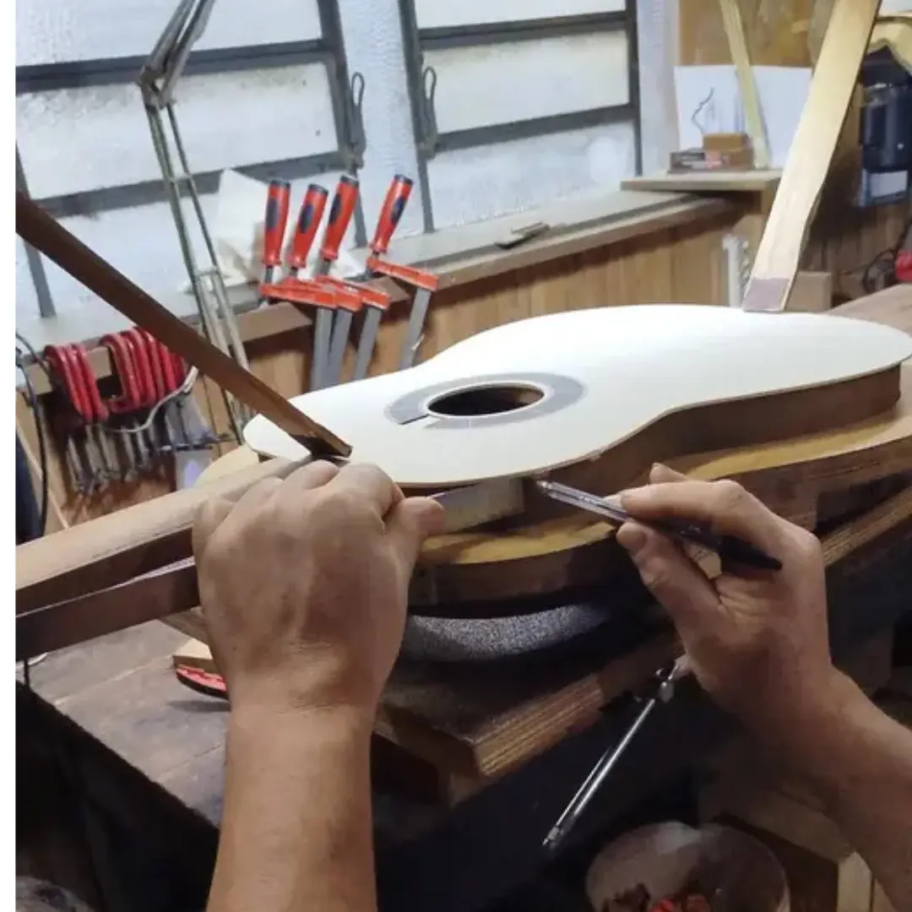
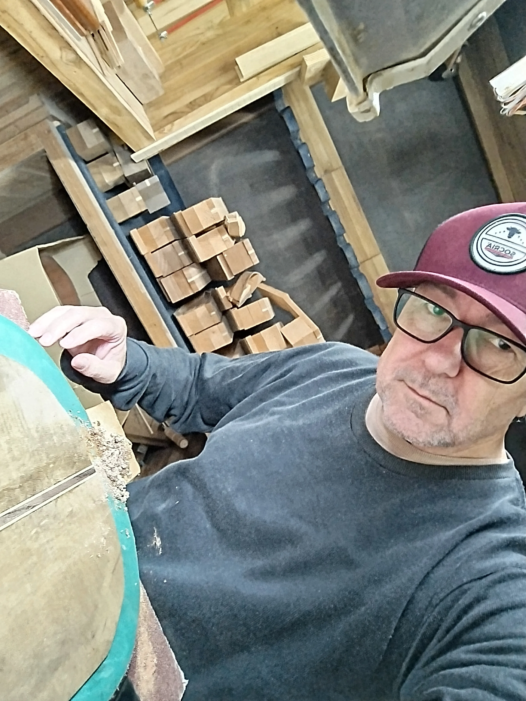
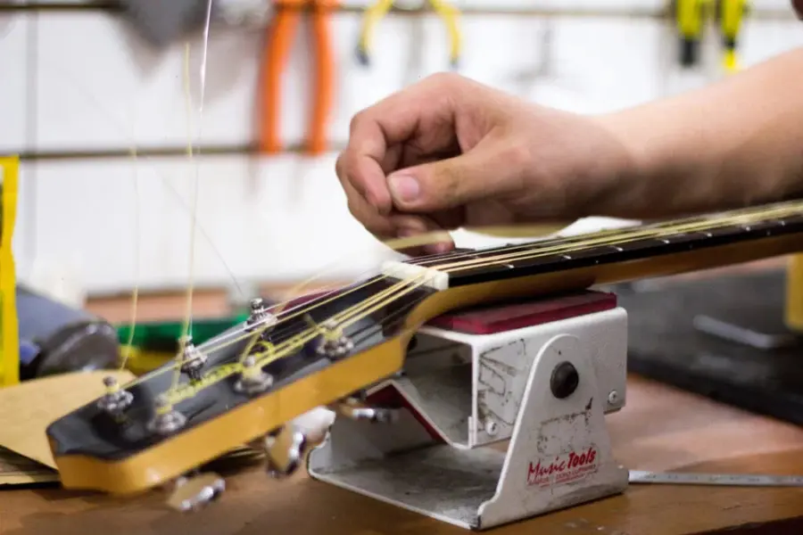
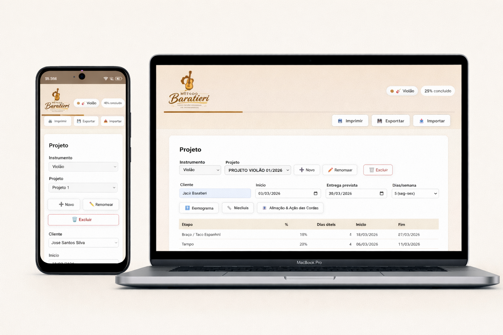
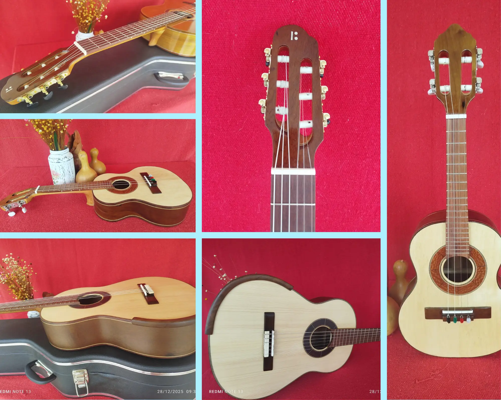

Luthieria Baratieri — Construção de Violões e Instrumentos de Cordas Artesanais
Instrumentos feitos à mão, serviços de luthieria e o Método Baratieri para construção de instrumentos.
Instrumentos feitos à mão, serviços de luthieria e o Método Baratieri para construção de instrumentos.
A Luthieria Baratieri é uma luthieria artesanal brasileira especializada na construção de violões artesanais, violas caipiras, cavaquinhos e instrumentos de cordas. Cada instrumento é construído manualmente, um a um, respeitando a tradição da luthieria e o comportamento natural das madeiras.
Além da construção de instrumentos, a luthieria também atua como luthier especializado em violão artesanal, regulagem de violão, restauração e manutenção de instrumentos de cordas, atendendo músicos de todo o Brasil.
Cada instrumento artesanal é único, resultado de um processo cuidadoso de construção, medições, testes acústicos e acabamento manual.
Luthieria em Terra Roxa, Paraná — atendimento para todo o Brasil


Jacir Paulo Baratieri é luthier e músico, com uma vida inteira ligada aos instrumentos de cordas, especialmente violão e viola caipira. Desde jovem, a música sempre esteve presente, tocando em bailes e eventos e desenvolvendo sensibilidade musical e ouvido apurado.
Ao longo da vida profissional, atuou em diversas áreas, mas sempre manteve o trabalho com madeira, ferramentas e construção manual. Nos últimos anos, dedicou-se intensamente ao estudo da luthieria, especializando-se na construção de violões artesanais, violas caipiras e instrumentos de cordas, além de restauração, regulagem de violão e ajustes técnicos para melhorar conforto, tocabilidade e sonoridade dos instrumentos.
Hoje, na oficina da Luthieria Baratieri, constrói instrumentos artesanais, realiza regulagens, restaurações e manutenção de instrumentos de cordas, além de ter desenvolvido o Método Baratieri, um sistema que orienta a construção de violão e instrumentos de cordas passo a passo, reunindo a experiência prática de oficina com organização e método de trabalho.
A Luthieria Baratieri trabalha com construção de violões artesanais, regulagem de violão, restauração de instrumentos antigos e construção de instrumentos de cordas como viola caipira, cavaquinho e ukulele. Se você procura um luthier especializado em violão artesanal e instrumentos de cordas, a Luthieria Baratieri atende músicos de todo o Brasil.
A Luthieria Baratieri oferece serviços completos de luthier, incluindo regulagem de violão, regulagem de guitarra, ajuste de braço, troca de trastes, restauração de instrumentos e manutenção de instrumentos de cordas.
Se você procura um luthier para violão, viola caipira ou instrumentos de cordas, entre em contato para regulagem, reparo ou restauração do seu instrumento.
Entre os principais serviços de luthier estão:
✔ Regulagem de violão e guitarra
✔ Ajuste de braço e tensor
✔ Troca de trastes
✔ Colagem de cavalete
✔ Restauração de instrumentos antigos
✔ Ajustes de nut e rastilho
✔ Limpeza e hidratação da escala

Pare de se perder na construção de instrumentos de cordas. Tenha um método claro do início ao fim.
O Método Baratieri é um aplicativo interativo criado para ajudar luthiers e estudantes na construção de violões, violas, cavaquinhos e ukuleles, organizando todas as etapas da construção do instrumento.
O aplicativo funciona como um guia de construção, com checklists técnicos, medidas, desenhos, registros do projeto e acompanhamento do progresso da construção.
Ele foi desenvolvido a partir da experiência prática dentro da oficina, reunindo teoria e prática no mesmo lugar.
Quero acesso vitalício🔗 Quer divulgar o Método Baratieri e ganhar comissões? Seja um parceiro.

Na loja da Luthieria Baratieri você encontra instrumentos artesanais de cordas construídos manualmente, como violões, violas caipiras, cavaquinhos e outros instrumentos sob encomenda.
Cada instrumento é único, feito à mão, com atenção à sonoridade, conforto e durabilidade, seguindo princípios da luthieria tradicional.
Não existem peças idênticas — cada obra carrega identidade própria, história e propósito musical.
Além da vitrine de instrumentos, oferecemos serviços especializados de manutenção, ajuste e restauração de instrumentos de cordas, sempre com atenção aos detalhes e respeito às características originais.
Visite a Loja
A Luthieria Baratieri trabalha com construção de violões artesanais, regulagem de violão, restauração de instrumentos antigos e construção de instrumentos de cordas como viola caipira, cavaquinho e ukulele. Se você procura um luthier especializado em violão artesanal e instrumentos de cordas, a Luthieria Baratieri atende músicos de todo o Brasil.